A build-along workshop3 hours
and better every day after.
Build a personal site you will still be improving a year from now — from a one-page idea to your own domain, in one session.
Sanket Tambare · sankettambare.in
Press → to begin · N for notes · F for full screen
00 · Welcome0:01
Software engineerMarathonerWriter
Work
Bridgenext, Punefull-stack · data · DORA metricsRun
10K → 50K ultraand the Sahyadri fortsWrite
English + मराठीessays · newsletter · podcastBuild
Sites for causesNGOs · a birding marathon · data storiessankettambare.in · card.sankettambare.in
00 · Welcome0:03
“I want one of these.”
00 · Welcome0:05
by 3:00 — a live URL, a repo, three docs, the prompt pack.
01 · The idea0:07
01 · The idea0:08
App builders
Fast. Pretty. Gone with the tide.
Your own stack
Built a room at a time. Yours to extend.
Not “can I build it today?”
“Will I improve it tomorrow?”
01 · The idea0:10
| App builder | Your own stack | |
|---|---|---|
| The code | In their platform | Your GitHub repo |
| The content | Mixed into the code | Plain files |
| Change one word | Prompt and hope | Edit, push, live |
| The history | A chat log | Every version |
| The cost | A monthly plan | Free tiers |
In plain words Repo a project folder with its full history · changelog a list of every change
01 · The idea0:12
The builder
Writes, runs and checks the code.
The memory
Every version saved. A push triggers a deploy.
The shape
Pages and rules an AI already knows.
The stage
Hosting, domain and SSL in one place.
In plain words Framework a starter kit for pages · Cloudflare the servers that show your site
01 · The idea0:14
The 100th change costs no more than the first.
In plain words Major version a new page or a redesign
01 · The idea0:16
Must have
A folder of your stuff — bio, photo, CV, project links
In plain words Terminal where you type commands · Node.js the engine for website tools
01 · The idea0:18 · plain words
Tap any dotted word later for its meaning.
02 · Shape0:20 · exercise, 10 min
What is your core idea? One page, your own words — before any AI.
# idea.md
Who is it for?
What should they do?
Three things it must do
What I already have
What it must never be
Time I'll give it
idea.md saved.
02 · Shape0:30 · Claude chat
Here is idea.md. Before writing anything, interview me — at most 5 questions at a time — until you can write concept.md without guessing.
Tip: start a Claude Project for your site.
In plain words Claude Project one folder for a topic's chats and files
02 · Shape0:40 · Research on
Using concept.md, research each separately: peer sites · design · frameworks · hosting · SEO. Cite every claim with a link.
Turn on Research in the chat's tools menu.
In plain words Research Claude reads many pages and writes a cited report
02 · Shape0:50
Why + what
How
When
From concept.md and the research, write concept.md, technical-decisions.md and phased-plan.md. Keep each short.
In plain words .md a plain-text file: # is a heading, - is a bullet
02 · Shape0:57
later.mdA long list is a wish.
A short one is a plan.
In plain words Phase 1 the smallest useful version · later.md a parking lot
02 · Shape1:00
Real content makes a layout that fits.
a content folder + INVENTORY.md
In plain words Markdown plain text for writing · JSON plain text for lists
03 · Decide1:05
Content site → Astro · App → Next.js or SvelteKit
In plain words Framework a starter kit for pages · JS code in the browser: less is faster
03 · Decide1:12
Free tiers change — check before you pick.
In plain words Hosting the computers serving your site · edge copies near every visitor
04 · Build1:30 · Claude Code
Read docs/technical-decisions.md. Do Phase 0: scaffold the framework, fill content/ with my real content, add CLAUDE.md, make the build pass, commit.
my-site/ ├─ content/ ├─ src/ ├─ docs/ ├─ CLAUDE.md └─ CHANGELOG.md
Phase 0 committed, pushed to a new GitHub repo.
In plain words Repo a folder that remembers every version · commit a saved checkpoint
04 · Build1:40
content/Change words without touching code — and code without touching words.
In plain words Content what the site says · code how it looks and works
04 · Build1:45
Read at the start of every session. Keep it short.
# my-site Astro → Cloudflare Workers. - Content only in content/ - Plan: docs/phased-plan.md - npm run build must pass - Log every change - Lessons: one line each
In plain words CLAUDE.md the note Claude reads at the start of every session
04 · Build1:50
New phase → new session
/clearIn plain words Context what Claude can hold in mind · plan mode it proposes, you approve
04 · Build1:55 · Phase 1 now
Read CLAUDE.md and the plan. Do Phase 1 only. Plan first, ask what's unclear. Then build, check every page, log the change, commit.
Phase 1 running on localhost with your real content.
In plain words localhost a private preview on your own laptop
04 · Build2:05
/verify/code-reviewDone = deployed, and you looked at it.
In plain words Build files → finished site · review a second reader
04 · Build2:10
Audit SEO, performance and accessibility on every page with Lighthouse (mobile). Fix the top issues; show before/after scores.
In plain words Lighthouse Google's free report card · SEO being found on Google
05 · Ship2:20
git checkout -b phase-2 git add -A git commit -m "Phase 2" git push -u origin phase-2
Or just say: “commit and push to a new branch”.
In plain words Push upload to GitHub · branch a safe copy to try a change
05 · Ship2:25
npm run build · output dist*.workers.devPush to main = live. Other branches = preview links.
In plain words Deploy put the site online · preview a test link per branch
05 · Ship2:35
https://yourname.com, live.
In plain words DNS the internet's phonebook · nameservers who keeps your entry
06 · Case study2:38
Its database is skipped today — start with files.
In plain words Database a store for many records — skipped today
06 · Case study2:40 · possibilities
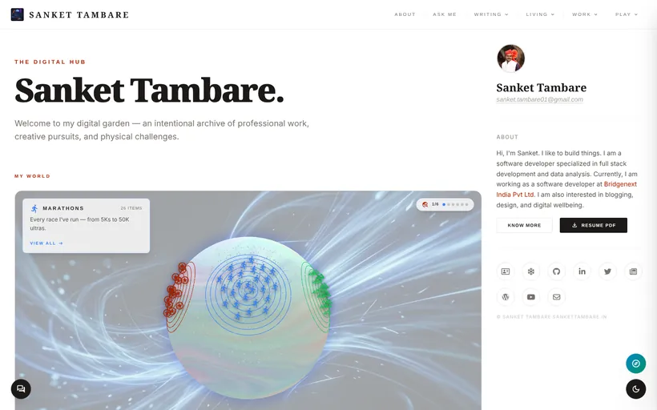
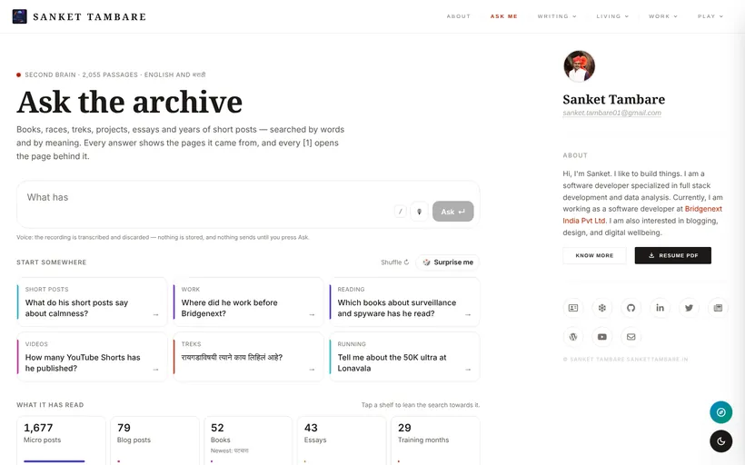
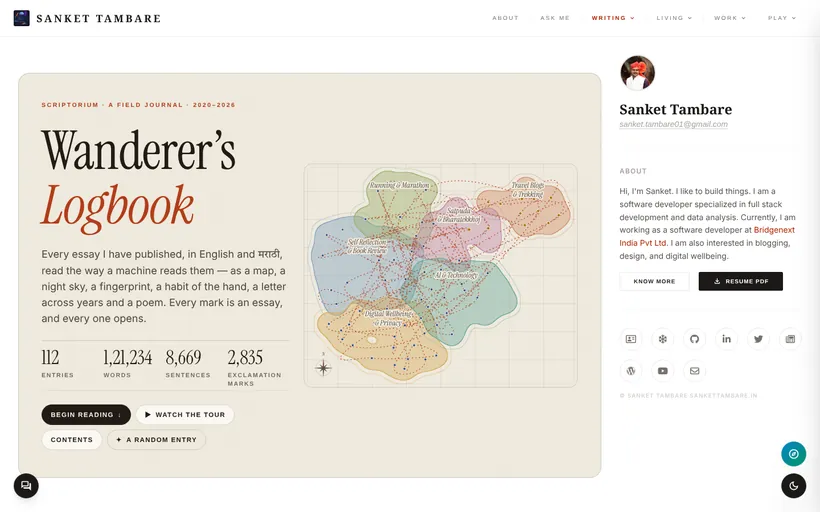
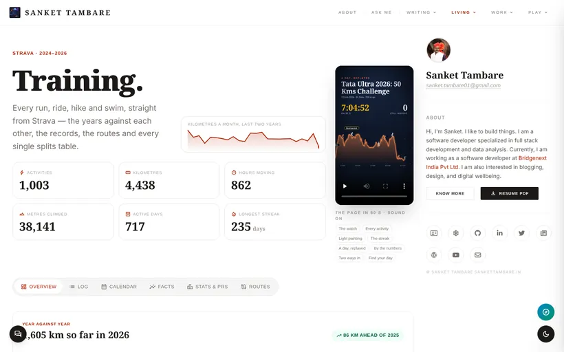
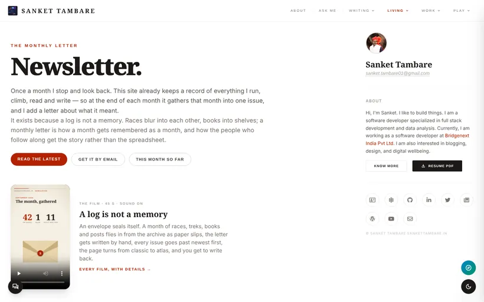
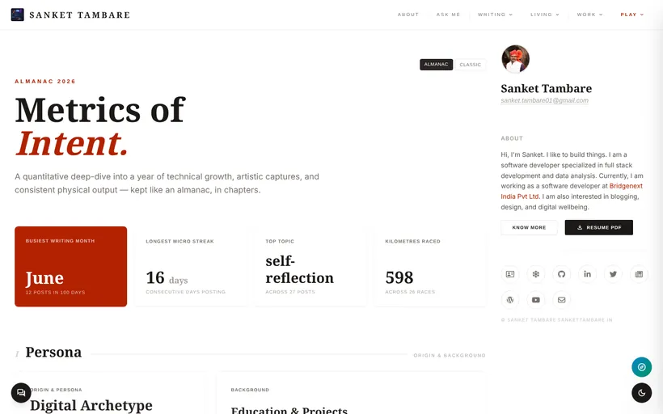
06 · Case study2:42
One source per fact
Bio and links in one file
Content apart
One door to the data
A changelog
On every change
Tests guard rules
The build fails, not you
Generated files
Sitemap, feeds, docs
Lessons written
One line in CLAUDE.md
In plain words Source of truth the one place a fact lives · test an automatic check
06 · Case study2:44
Blank to crawlers
Bots saw an empty page. Render HTML from day one.
10 ms of CPU
Share images timed out. Test on the real deploy.
Silent WebP
Images vanished, no error. Write gotchas in CLAUDE.md.
In plain words Crawler a robot that reads sites for search and AI
07 · Featured projects2:46 · 1 of 4
Flip it, toss it — one card, many versions of you.
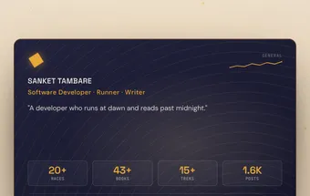
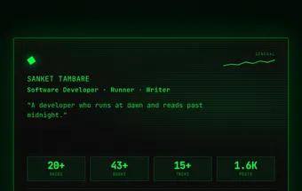
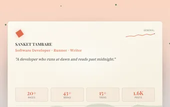
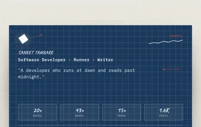
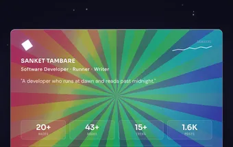
→ card.sankettambare.in
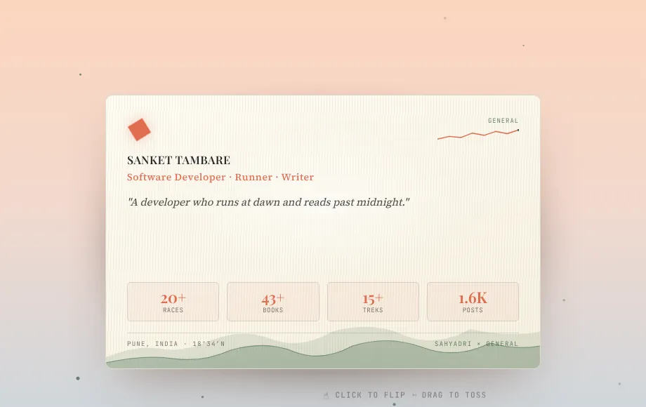
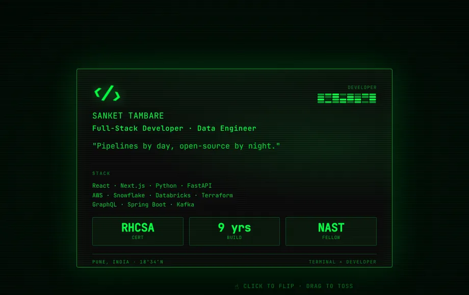
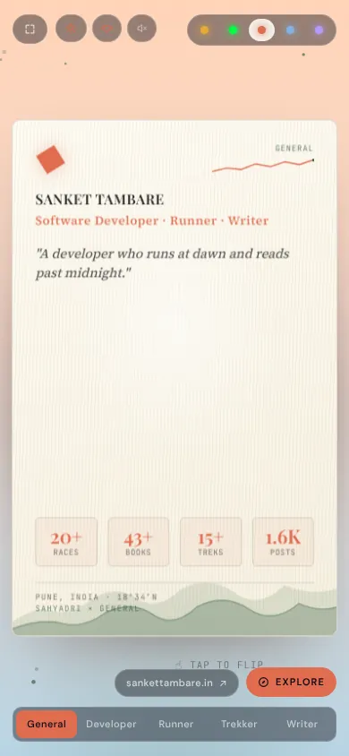
In plain words vCard a contact your phone saves in one tap
07 · Featured projects2:48 · 2 of 4
One week, one hill, every bird counted.
→ vtbm.in
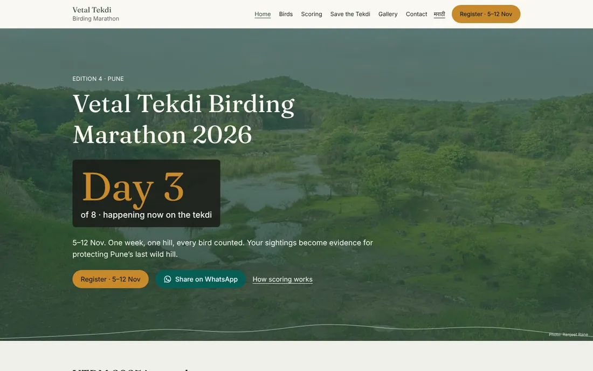
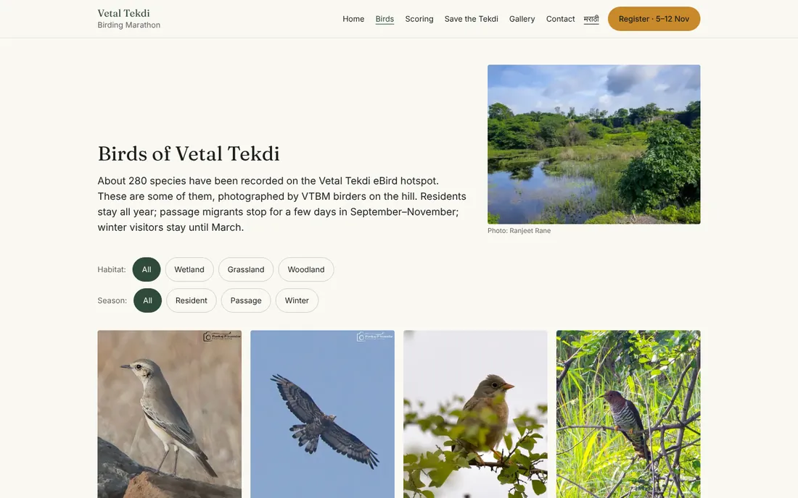
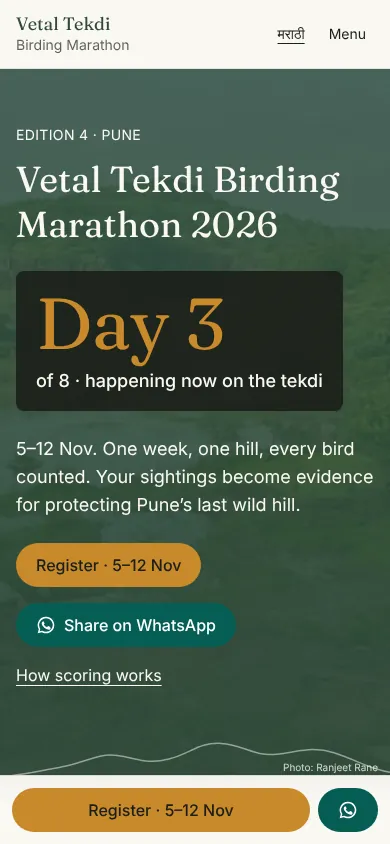
In plain words API one site asking another for data
07 · Featured projects2:50 · 3 of 4
Every finish line, worth framing.
→ runfolio.in
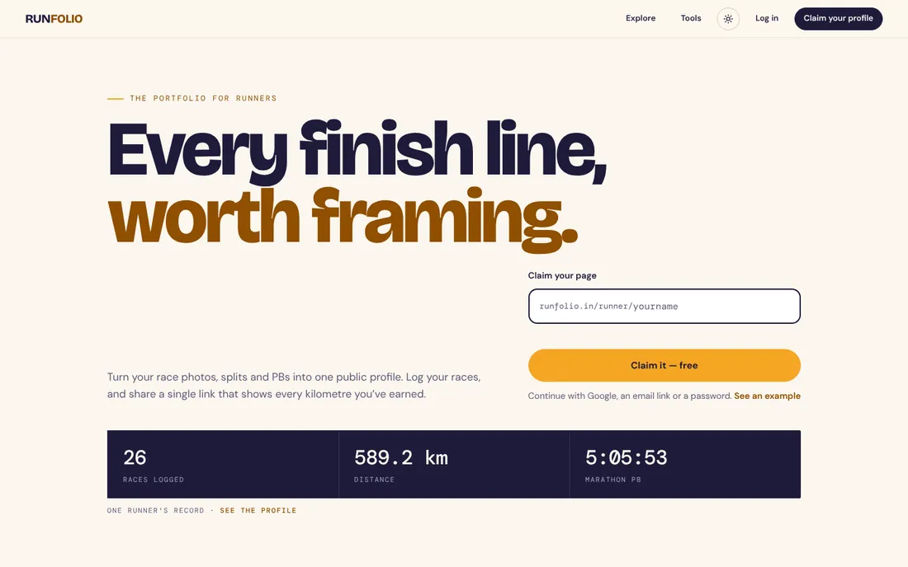
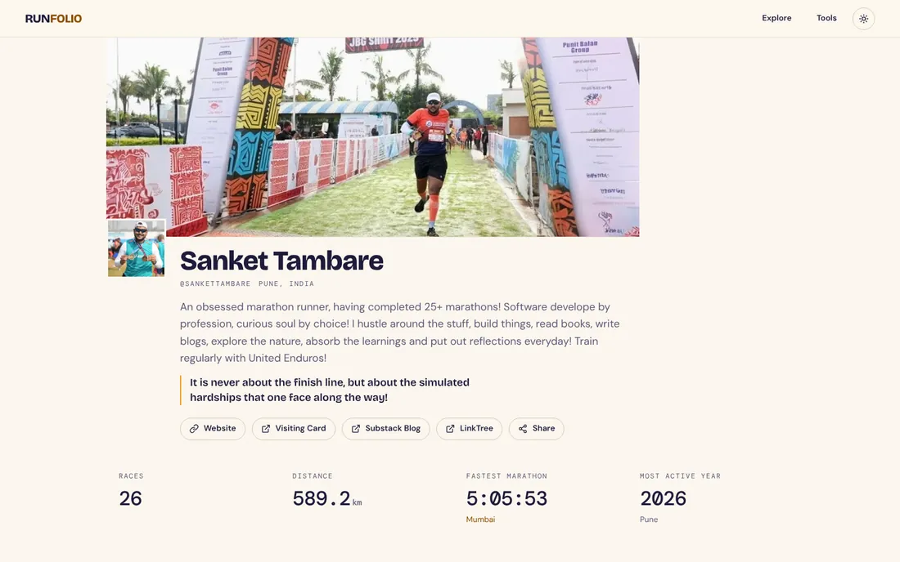
In plain words PB personal best
07 · Featured projects2:51 · 4 of 4
A bilingual data story on the Sahyadri — trees first.
→ are-psp-useful.pages.dev
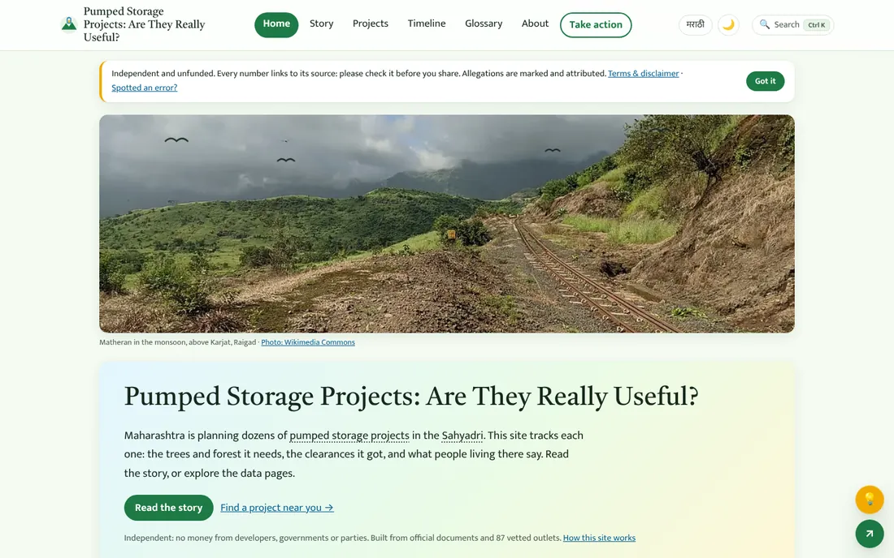
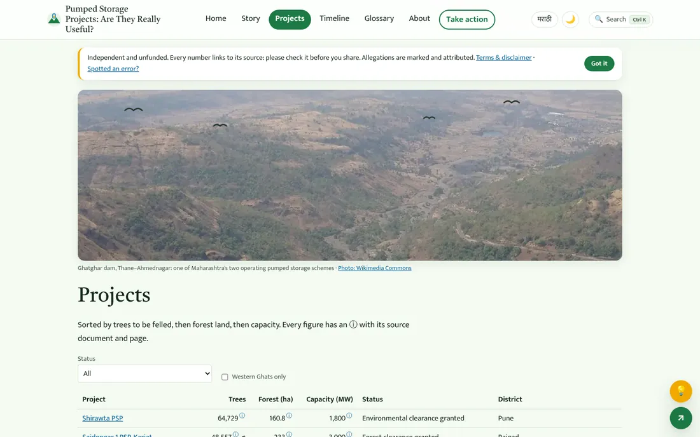
In plain words Open data the numbers, offered as downloads
08 · Iterate2:52
“Add my Pune Half Marathon to Races, with this photo.”
In plain words Merge fold a branch's change into the live site
08 · Iterate2:54 · homework
In plain words workers.dev Cloudflare's free address, before a domain
09 · Close2:56 · your turn
1
2
3
4
5
6
09 · Close2:59
One small change a day.
Scan for my card.